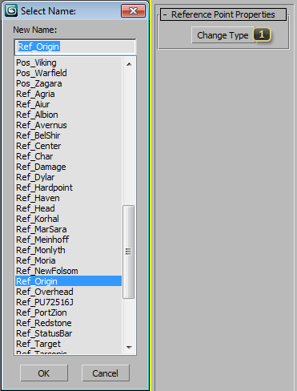

Node: Helpers: Attachment Point
The SC2AttachPt Node, found in the Standard Helpers create panel, is used to mark locations in 3d space at which the game can attach effects, UI items, etc. Each Attachment Point is given a specific name indicating its purpose.
Properties

Change Type brings up a floating combo-box which allows you to select and change the attachment point type.